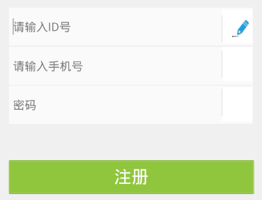
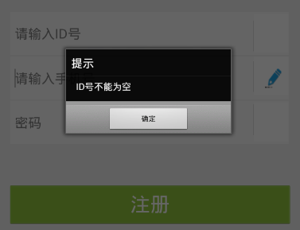
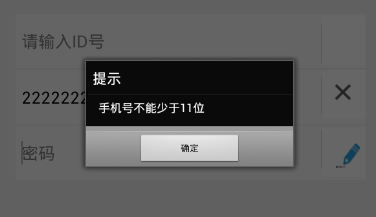
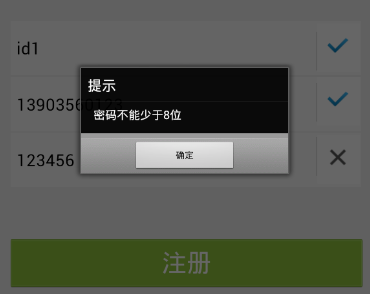
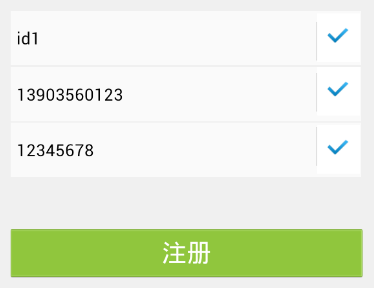

原型中效果图
上面两张图为标准银行中注册界面的输入动画的效果 —— 当用户光标停留在某个输入框中时，相应右边的小方框中就会呈现铅笔写字的动画；当光标离开时，写字动画停止，并判断刚输入的内容是否正确：若未输入内容则不显示任何状态；若输入内容正确，右边小方框中显示对勾；若输入内容错误，则显示叉号，并提示错误信息。本节将会讲述这个动画是怎样实现的。
示例的完整代码链接为：input_ani.xml
使用Lua脚本实现动画按照接口定义，分为三种：Timer，Transition，Animation。标准银行输入动画的实现使用了Animation接口，本节只对Animation接口各函数的使用方法做简单的说明，详细请参考EMP参考手册中的动画章节。
输入动画的页面很简单，有ID号，手机号和密码三个输入框，其后分别跟了一个小方框(用div实现)以展现铅笔写字的动画和显示判断输入内容是否正确的状态图片，状态图片初始不显示。
页面报文的代码片段如下：
<content>
<head>
<style>
.body{width:320px;height:460px;background-color: #F0F0F0;}
.img_divider{width:1px;height:32px;top:198px;left:269px;}
.img_divider1{width:1px;height:32px;top:240px;left:269px;}
.img_divider2{width:1px;height:32px;top:285px;left:269px;}
.img_result{width:18px;height:16px;top:10px;left:8px;display:none;}
.div_anim_name{width:35px;height:40px;top:191px;left:270px;background-color:#FFFFFF;}
.div_anim_phone{width:35px;height:40px;top:235px;left:270px;background-color:#FFFFFF;}
.div_anim_pwd{width:35px;height:40px;top:283px;left:270px;background-color:#FFFFFF;}
.input_pw{left:17px;top:281px;height:45px;width:289px;color:#000000;font-size:14px;background-image:url(table1.png);}
.input_name{left:17px;top:189px;height:45px;width:289px;color:#000000;font-size:14px;background-image:url(table1.png);}
.input_phone{left:17px;top:235px;height:45px;width:289px;color:#000000;font-size:14px;background-image:url(table1.png);}
.register_but{width:290px;height:40px;left:17px;top:369px;font-size:20px;background-image:url(register.png);color:#FFFFFF;}
</style>
</head>
<script type="text/x-lua">
...
</script>
<body class="body">
<!--name输入框-->
<input type="text" border="0" class="input_name" name="name" maxleng='11' hold="请输入ID号" onfocus="start_name_anim()" onblur="stop_name_anim()" />
<div class="div_anim_name" border="0" name="div_anim_name">
<img class="img_result" name="img_result_name" src="local:input_determine.png"/>
<img class="img_result" name="img_result_name" src="local:input_error.png"/>
</div>
<img class="img_divider" src="local:login_the_divider.png"/>
<!--phone输入框-->
<input type="text" border="0" class="input_phone" style="-wap-input-format:'N'" name="phoneNum" maxleng='11' onfocus="start_phone_anim()" onblur="stop_phone_anim()"
hold="请输入手机号"/>
<div class="div_anim_phone" border="0" name="div_anim_phone">
<img class="img_result" name="img_result_phone" src="local:input_determine.png"/>
<img class="img_result" name="img_result_phone" src="local:input_error.png"/>
</div>
<img class="img_divider1" src="local:login_the_divider.png"/>
<!--password输入框-->
<input type="password" border="0" class="input_pw" name="password" hold="密码" minleng='8' maxleng='12' onfocus="start_password_anim()" onblur="stop_password_anim()"/>
<div class="div_anim_pwd" border="0" name="div_anim_password">
<img class="img_result" name="img_result_password" src="local:input_determine.png"/>
<img class="img_result" name="img_result_password" src="local:input_error.png"/>
</div>
<img class="img_divider2" src="local:login_the_divider.png"/>
<!--注册按钮-->
<input type="button" class="register_but" value="注册"/>
</body>
</content>
下面我们分别介绍各个函数的功能和实现方法：
--[[
@doc:根据名称改变控件样式
@params:
name:控件名称
style:样式名称，比如："display"
value:修改值，需要将控件样式修改的值
@attention:如果界面中有多个此名称控件则这些控件都会被修改。
]]--
function changeStyle(name,style,value)
local ctrl = document:getElementsByName(name);
if ctrl and #ctrl > 0 then
for key,ctrl_atom in pairs(ctrl) do
ctrl_atom:setStyleByName(style,value);
end;
else
window:alert(name .. "控件不存在！");
end;
end;
--[[根据名称获取控件]]--
function getCtrl(name)
local ctrl = document:getElementsByName(name);
if ctrl and #ctrl > 0 then
return ctrl;
else
window:alert(name .. "控件不存在！");
end;
end;
--[[
@doc: 根据名称获取控件值
@params:
name: 控件名称
msg: 返回的提示消息
require: 是否验证控件值为空
]]--
function getValue(name,msg,require)
local ctrl = document:getElementsByName(name);
local ctrl_value;
if ctrl and #ctrl > 0 then
ctrl_value = ctrl[1]:getPropertyByName("value");
if require then
if ctrl_value ~= nil and ctrl_value ~= "" then
return ctrl_value;
else
window:alert(msg);
return -1;
end;
else
return ctrl_value;
end;
else
window:alert( name .. "控件不存在！");
end;
end;
--[[
@doc: 检查字符串长度
@params:
value: 字符串值
min_len: 最小长度
max_len: 最大长度
msg: 返回的提示消息
]]--
function check_length(value,min_len,max_len,msg)
local length = string.len(value);
if length > max_len then
window:alert(msg.."不能多于"..max_len.."位");
return nil;
end;
if length < min_len then
window:alert(msg.."不能少于"..min_len.."位");
return nil;
end;
return true;
end;
input_animation()
函数的实现代码如下：
--[[
@doc:输入动画
@params:
setFrame：table {x=1,y=1,width=1,height=1}设置动画x相对父控件显示位置
addCtrl：设置动画父控件，控件对象
setDuration:num 设置动画持续时间
setRepeatCount：num 设置动画播放次数
setStopListener：fun名称 设置动画停止监听方法
@doc return:
返回动画对象
--]]
function input_animation(setFrame,setDuration,setRepeatCount,setStopListener,addCtrl)
local framesTab =
{
"login/images/login_input_pen1.png",
"login/images/login_input_pen2.png",
"login/images/login_input_pen3.png"
};
local aniObj = animation:newFrames(framesTab);
--设置动画
animation:setFrame(aniObj,setFrame);
animation:setDuration(aniObj,setDuration);
animation:setRepeatCount(aniObj,setRepeatCount);
animation:setStopListener(aniObj,setStopListener);
animation:add(aniObj,addCtrl);
return aniObj;
end;
该函数创建了一个动画对象并返回给调用它的函数，这个动画对象实现了输入时铅笔从左到右移动的动画效果。它通过Animation接口一帧一帧地循环播放铅笔在不同位置的图片，看起来就像铅笔在从左到右移动一样。
animation:newFrames(framesTab) 用包含每一帧图片名称的table创建了一个动画对象； animation:setFrame(aniObj,setFrame) 设置了动画的显示区域； animation:setDuration(aniObj,setDuration) 设置了动画的持续时间； animation:setRepeatCount(aniObj,setRepeatCount) 设置了动画的播放次数； animation:setStopListener(aniObj,setStopListener) 设置了动画结束后调用的监听方法，用于处理判断输入的内容； animation:add(aniObj,addCtrl) 设置了负责展示该动画的控件。start_name_anim()，start_phone_anim() 和 start_password_anim()
函数的实现代码如下：
--name的动画对象
local aniObj_name;
--phone的动画对象
local aniObj_phone;
--password的动画对象
local aniObj_password;
--[[用户名输入动画]]--
function start_name_anim()
--隐藏判断结果的图片
changeStyle("img_result_name","display","none");
--动画展示的区域
local setFrame = {x=11,y=12,width=20,height=20};
local div_anim_name = getCtrl("div_anim_name");
--获得设置好的动画对象
aniObj_name = input_animation(setFrame,1,-1,input_anim_stop_listen_name,div_anim_name[1]);
--开始动画
animation:play(aniObj_name);
end;
--[[电话号码输入动画]]--
function start_phone_anim()
changeStyle("img_result_phone","display","none");
local setFrame = {x=11,y=12,width=20,height=20};
local div_anim_phone = getCtrl("div_anim_phone");
aniObj_phone = input_animation(setFrame,1,-1,input_anim_stop_listen_phone,div_anim_phone[1]);
animation:play(aniObj_phone);
end;
--[[密码输入动画]]--
function start_password_anim()
changeStyle("img_result_password","display","none");
local setFrame = {x=11,y=12,width=20,height=20};
local div_anim_password = getCtrl("div_anim_password");
aniObj_password = input_animation(setFrame,1,-1,input_anim_stop_listen_password,div_anim_password[1]);
animation:play(aniObj_password);
end;
这三个函数分别控制三个输入框的输入动画的开始。它们调用input_animation()函数，初始化并获得动画对象，再调用animation:play()函数播放动画。这三个函数分别通过对应输入框的onfocus事件被触发，当用户将光标移入输入框时，与该输入框相应的onfocus事件函数被调用，此时便会显示输入动画。
stop_name_anim()，stop_phone_anim() 和 stop_password_anim()
函数的实现代码如下：
--[[用户名输入完成后停止动画]]--
function stop_name_anim()
animation:stop(aniObj_name);
end;
--[[电话号码输入完成后停止动画]]--
function stop_phone_anim()
animation:stop(aniObj_phone);
end;
--[[密码输入完成后停止动画]]--
function stop_password_anim()
animation:stop(aniObj_password);
end;
这三个函数分别控制三个输入框的输入动画的终止。它们调用animation:stop()接口停止动画。这三个函数分别通过对应输入框的onblur事件被触发，即当用户光标移出输入框的时候，与该输入框相应的onblur事件函数被调用，此时动画便会停止播放。
input_anim_stop_listen_name()，input_anim_stop_listen_phone() 和 input_anim_stop_listen_password()
这三个函数分别对应ID号，手机号，密码输入框输入完成的监听事件，被传入input_animation()函数中。当输入动画停止后，这些函数会被触发执行，验证输入内容的正确性。
input_anim_stop_listen_name()
该函数的实现代码如下：
--[[用户名输入动画完成监听]]--
function input_anim_stop_listen_name()
local div_anim_name = getCtrl("div_anim_name");
local img_result_name = getCtrl("img_result_name");
--显示加载动画
div_anim_name[1]:showLoading();
--获取ID号验证是否为空
local num = getValue("name","ID号不能为空",true);
if num == -1 then
div_anim_name[1]:stopLoading();
return;
end;
--ID号输入正确显示对勾
img_result_name[1]:setStyleByName("display","block");
--加载动画停止
div_anim_name[1]:stopLoading();
end;
输入动画结束后先显示加载动画，div_anim_name[1]:showLoading()，之后使用getValue()函数验证输入的ID号是否为空：若为空则不做判断只停止加载动画；不为空则显示对勾的图片并停止加载动画。
input_anim_stop_listen_phone()
该函数的实现代码如下：
--[[电话号码动画完成监听]]--
function input_anim_stop_listen_phone()
local div_anim_phone = getCtrl("div_anim_phone");
--显示加载动画
div_anim_phone[1]:showLoading();
local img_result_phone = getCtrl("img_result_phone");
--判断手机号是否为空
local num = getValue("phoneNum","手机号不能为空",true);
if num == -1 then
div_anim_phone[1]:stopLoading();
return;
end;
--判断手机号长度，手机号长度不符合则显示叉号
local check_flag = check_length(num,11,11,"手机号");
if check_flag == nil then
div_anim_phone[1]:stopLoading();
img_result_phone[2]:setStyleByName("display","block");
return;
end;
--加载动画停止
div_anim_phone[1]:stopLoading();
--输入正确显示对勾
img_result_phone[1]:setStyleByName("display","block");
end;
输入动画结束后先显示加载动画，div_anim_phone[1]:showLoading()，之后使用getValue()函数验证输入的手机号是否为空：若为空则不做判断只停止加载动画；不为空则使用check_length()函数判断手机号长度是否符合范围，不符合则显示叉号的图片并停止加载动画，符合则显示对勾的图片并停止加载动画。
input_anim_stop_listen_password()
该函数的实现代码如下：
--[[密码动画完成监听]]--
function input_anim_stop_listen_password()
local div_anim_password = getCtrl("div_anim_password");
local img_result_password = getCtrl("img_result_password");
div_anim_password[1]:showLoading();
--验证密码是否为空
local pw = getValue("password","密码不能为空",true);
if pw == -1 then
div_anim_password[1]:stopLoading();
return;
end;
--验证密码长度，不符合则显示叉号
local check_flag = check_length(pw,8,12,"密码");
if check_flag == nil then
div_anim_password[1]:stopLoading();
img_result_password[2]:setStyleByName("display","block");
return;
end;
--加载动画停止
div_anim_password[1]:stopLoading();
--输入正确显示对勾
img_result_password[1]:setStyleByName("display","block");
end;
输入动画结束后先显示加载动画，div_anim_password[1]:showLoading()，之后使用getValue()函数验证输入的password是否为空：若为空则不做判断只停止加载动画；不为空则使用check_length()函数判断密码长度是否符合范围，不符合则显示叉号的图片并停止加载动画，符合则显示对勾的图片并停止加载动画。
通过学习标准银行输入动画的实现，我们了解了Animation动画接口的使用方法。很多动画都可以被分解为一帧一帧的图片播放形式，使用Animation接口可以轻松地实现这种动画，并且可以灵活控制动画的过程，开始和结束。
光标放入输入框时，铅笔写字动画开始显示

光标移入手机号输入框，ID号输入内容为空时，提示消息，右边小方框内不显示任何状态图片

输入手机号码长度错误时，提示消息，右边小方框显示叉号图片

输入密码长度不对时，提示消息，右边小方框显示叉号图片

输入全部正确，右边小方框全部显示对勾图片
